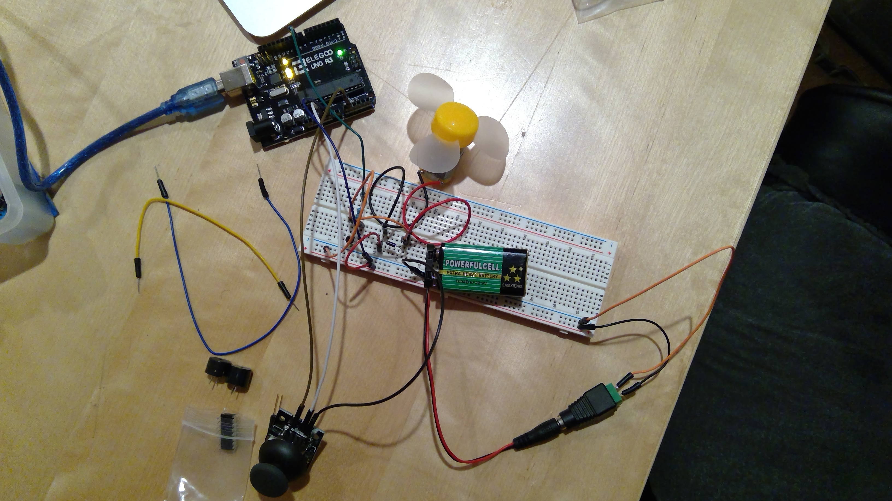
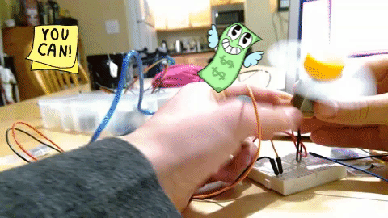
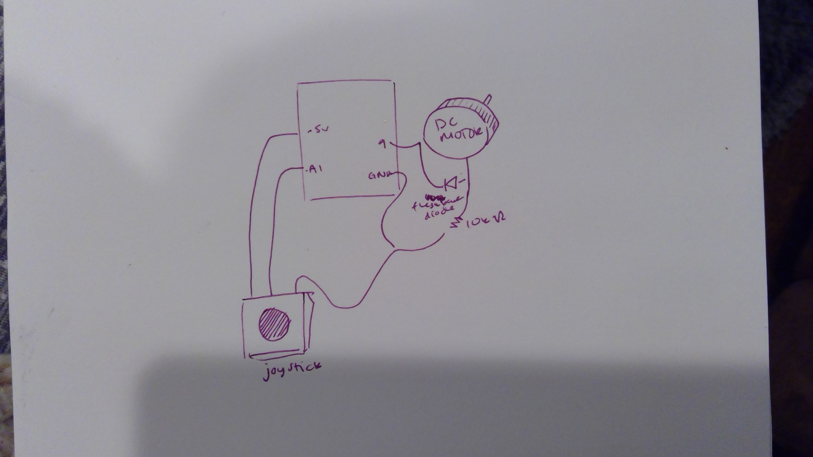

My program operates a DC motor using a joystick. When you push the joystick down, the motor spins the fan. When you push the joystick up, the motor stops spinng.


Schematic:
I used a DC motor, which requires a flashback diode and a resistor. I used a 10k resistor.
Here is all the documentation for assignment 3!
Here is my code:
// constant variables
int yPin = A1; // initalize pin
int yVal = 0; // reads current y value
int motor = 9; // motor connection pin
// initalize
void setup() {
pinMode(motor, OUTPUT); // sets motor to output
Serial.begin(9600); // initalizes serial to 9600
}
void loop() {
yVal = analogRead(yPin); // value from pin
yVal = yVal - 255; // new y position
int motorVal = map(yVal, 0, 1023, 100, 255); // motor values
analogWrite(motor, motorVal); // speed of motor depending on joystick position
delay(1000); // one second delay
}